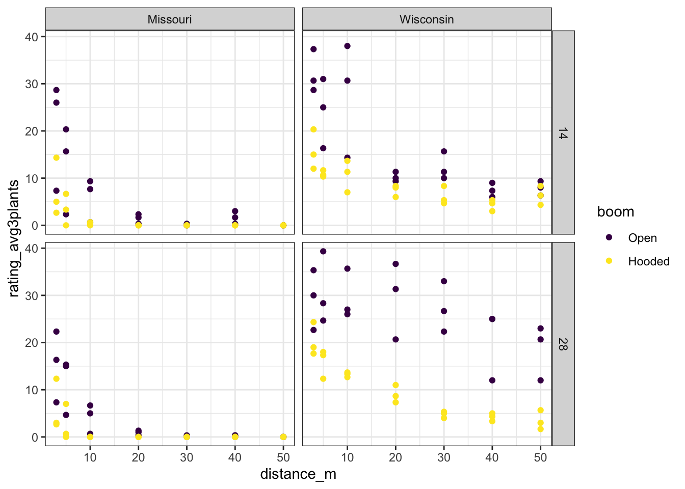
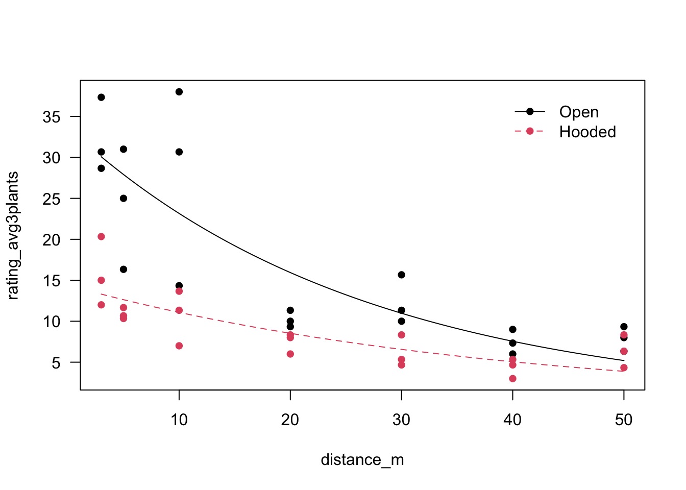
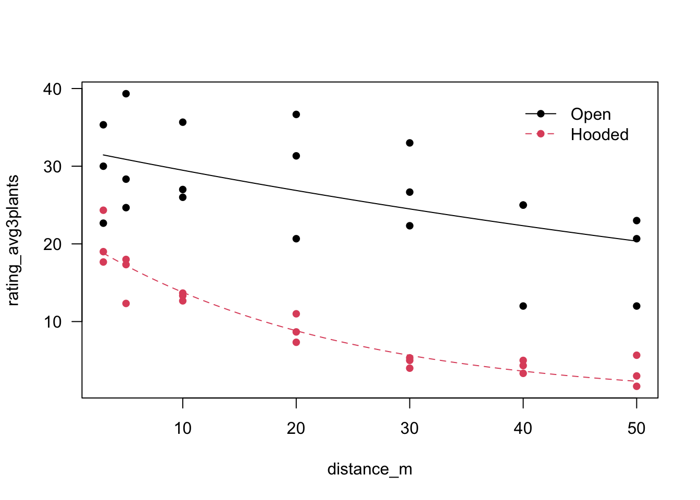
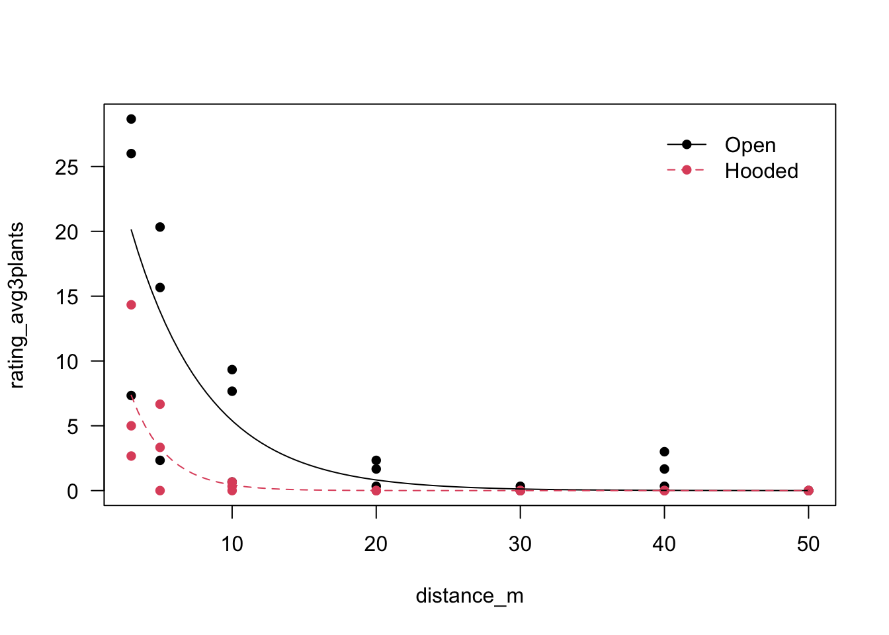
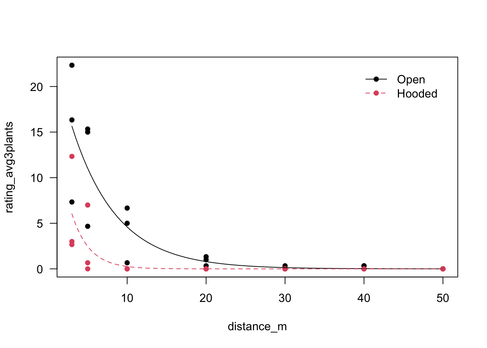

library(tidyverse)
library(drc)2022 Bayer Hooded Sprayer
readxl::read_excel("dataset.xlsx") %>%
janitor::clean_names() %>%
mutate(rating_dat = as_factor(rating_dat)) %>%
mutate_if(is_character, as_factor) -> datdat %>%
# filter(rating_dat == 14) %>%
ggplot(aes(x = distance_m, y = rating_avg3plants, color = boom)) +
facet_grid(rating_dat ~ location) +
geom_point() +
scale_color_viridis_d() +
theme_bw()
Wisconsin
14 days after application
wisc14 <- dat %>%
filter(rating_dat == "14" & location == "Wisconsin")model_14_wi <- drm(rating_avg3plants ~ distance_m, boom,
fct = EXD.2(),
data = wisc14)plot(model_14_wi, type = "all",
col = c(1,2),
pch = 16, log = "")
summary(model_14_wi)
Model fitted: Exponential decay with lower limit at 0 (2 parms)
Parameter estimates:
Estimate Std. Error t-value p-value
d:Open 33.6379 2.5369 13.2594 8.364e-16 ***
d:Hooded 14.3956 2.3099 6.2322 2.735e-07 ***
e:Open 26.7826 4.2638 6.2814 2.342e-07 ***
e:Hooded 38.1935 14.8301 2.5754 0.01403 *
---
Signif. codes: 0 '***' 0.001 '**' 0.01 '*' 0.05 '.' 0.1 ' ' 1
Residual standard error:
4.725031 (38 degrees of freedom)ED(model_14_wi, c(5, 10, 50, 90))
Estimated effective doses
Estimate Std. Error
e:Hooded:5 1.95907 0.76068
e:Hooded:10 4.02409 1.56250
e:Hooded:50 26.47375 10.27941
e:Hooded:90 87.94388 34.14745
e:Open:5 1.37377 0.21870
e:Open:10 2.82182 0.44923
e:Open:50 18.56426 2.95541
e:Open:90 61.66913 9.8176828 days after application
wisc28 <- dat %>%
filter(rating_dat == "28" & location == "Wisconsin")model_28_wi <- drm(rating_avg3plants ~ distance_m, boom, fct = EXD.2(), data = wisc28)plot(model_28_wi, type = "all",
col = c(1,2),
pch = 16, log = "")
summary(model_28_wi)
Model fitted: Exponential decay with lower limit at 0 (2 parms)
Parameter estimates:
Estimate Std. Error t-value p-value
d:Open 32.3366 1.7967 17.9979 < 2.2e-16 ***
d:Hooded 21.4973 2.6228 8.1962 6.308e-10 ***
e:Open 108.1046 27.3537 3.9521 0.0003254 ***
e:Hooded 22.4464 5.5530 4.0422 0.0002491 ***
---
Signif. codes: 0 '***' 0.001 '**' 0.01 '*' 0.05 '.' 0.1 ' ' 1
Residual standard error:
4.541804 (38 degrees of freedom)Missouri
14 days after application
miss14 <- dat %>%
filter(rating_dat == "14" & location == "Missouri") %>%
mutate(rating_avg3plants = case_when(
rating_avg3plants == 0.000000 ~ 0.000001,
TRUE ~ rating_avg3plants
))model_14_mo <- drm(rating_avg3plants ~ distance_m, boom,
fct = EXD.2(),
data = miss14)plot(model_14_mo, type = "all",
col = c(1,2),
pch = 16, log = "")
summary(model_14_mo)
Model fitted: Exponential decay with lower limit at 0 (2 parms)
Parameter estimates:
Estimate Std. Error t-value p-value
d:Open 35.3675 8.7849 4.0259 0.0002615 ***
d:Hooded 24.5941 28.8420 0.8527 0.3991577
e:Open 5.3172 1.6489 3.2247 0.0025928 **
e:Hooded 2.4835 2.0922 1.1870 0.2425937
---
Signif. codes: 0 '***' 0.001 '**' 0.01 '*' 0.05 '.' 0.1 ' ' 1
Residual standard error:
3.992089 (38 degrees of freedom)28 days after application
miss28 <- dat %>%
filter(rating_dat == "28" & location == "Missouri") %>%
mutate(rating_avg3plants = case_when(
rating_avg3plants == 0.000000 ~ 0.000001,
TRUE ~ rating_avg3plants
))model_28_mo <- drm(rating_avg3plants ~ distance_m, boom,
fct = EXD.2(),
data = miss28)plot(model_28_mo, type = "all",
col = c(1,2),
pch = 16, log = "")
summary(model_28_mo)
Model fitted: Exponential decay with lower limit at 0 (2 parms)
Parameter estimates:
Estimate Std. Error t-value p-value
d:Open 26.4652 5.1850 5.1042 9.584e-06 ***
d:Hooded 23.1460 24.8630 0.9309 0.3577615
e:Open 5.7097 1.4360 3.9760 0.0003032 ***
e:Hooded 2.2299 1.5764 1.4146 0.1653400
---
Signif. codes: 0 '***' 0.001 '**' 0.01 '*' 0.05 '.' 0.1 ' ' 1
Residual standard error:
2.810194 (38 degrees of freedom)